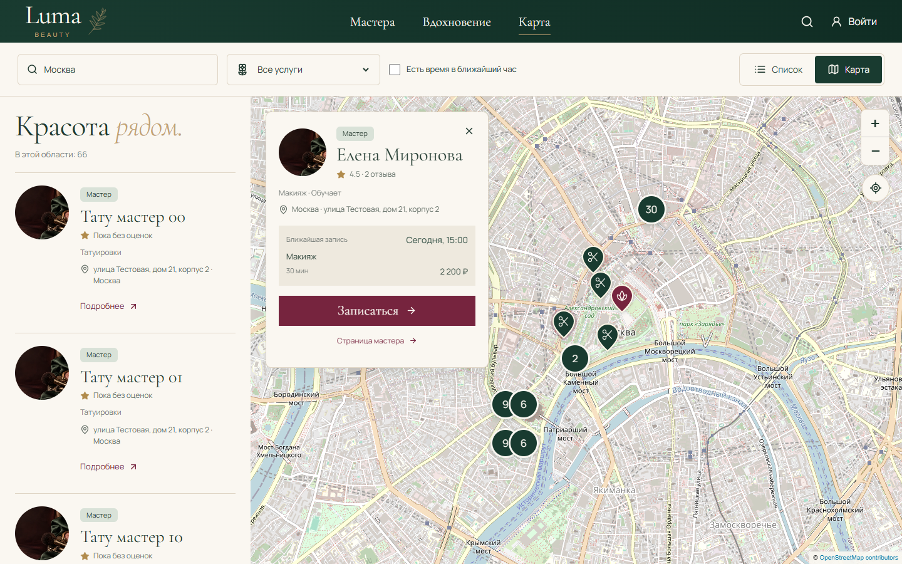
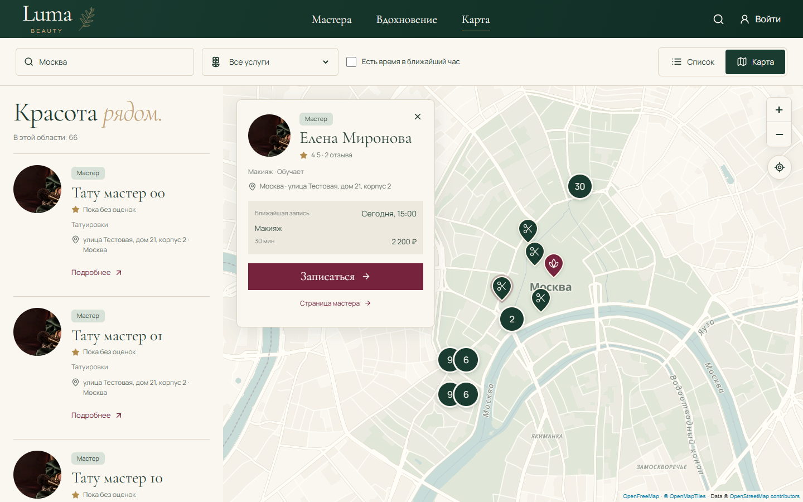
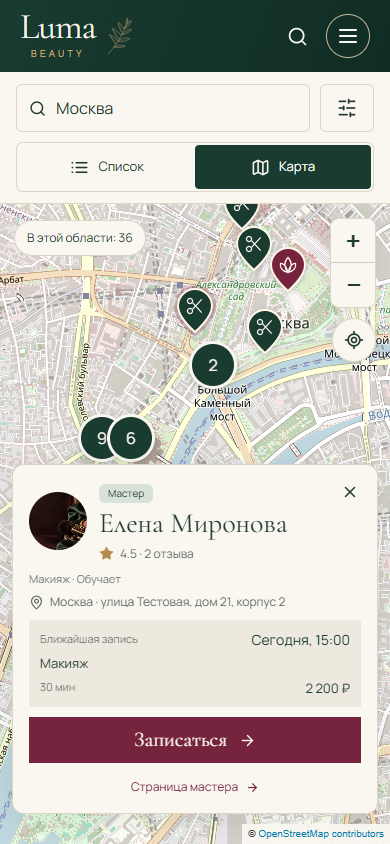
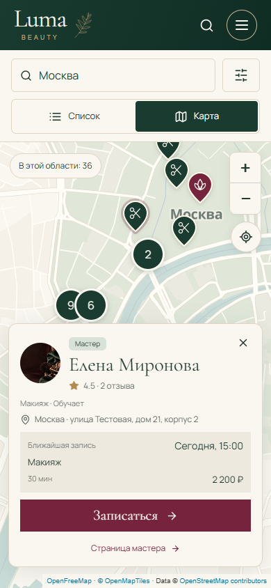

Одна Luma. Две подложки.
Предварительное сравнение · 14 октября 2026 · Тестовые анкеты · Провайдер ещё не выбран
Сейчас · Leaflet / OpenStreetMap

Вариант · MapLibre / OpenFreeMap

Текущая · телефон

OpenFreeMap · телефон
